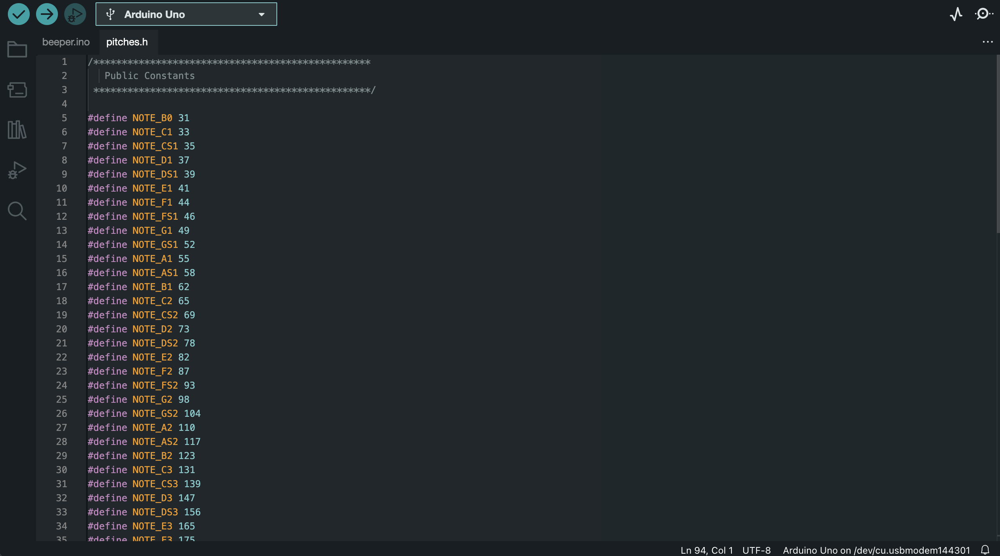

This lab begins with controlling the RGB values of an RGB LED. The lab then transitions to using the passive buzzer to play different melodies. This lab introduces the
tone() and notone() functions, header files, and requires the usage of arrays.
Materials Used
All materials but the multimeter are sourced from the Elegoo Super Starter Kit UNO R3 Project Kit
Elegoo Uno R3 Controller Board
USB Cable
USB-C to USB-A Adapter
830 Tie-Points Breadboard
Breadboard Jumper Wire
Resistors
RGB LED
Joystick Module
Passive Buzzer
Multimeter
Part 1: Wiring up the RGB LED
To begin, I created a circuit to connect the RGB LED to the Arduino. 200 Ohm resistors should be used between the terminals of the Arduino and the prongs of the LED.
My circuit, as well as a circuit diagram, are shown below.
I then wrote a simple Arduino sketch to control the brightness of the R,G, and B leds by using the analogWrite() function. Four LED colors I achieved with this code are shown below.
Part 2: Dynamic Color Changer with Joystick
The lab's second part required us to use the joystick module to control the color levels of the RGB LED. I accomplished this by mapping x and y analog values from the joystick
to a range of 0-255. I then assigned that value to the R and G intensity values of the LED. The B value was determined by random(). The code can be seen here and
a video of it working is shown below.
Part 3: Musical Notes with Passive Buzzer
The remainder of the lab involves use of the passive buzzer, I wired it to my arduino as such.
We were then tasked with coding a simple sketch to make the buzzer beep repeatedly at a frequency of 440 Hz for one second, every second.
The code can be seen here and in action
below.
I then created a .h (header) file which included #define statements that assigned different frequency beeps to their respective musical notes. This file can be seen open
alongside my main .ino file below.

With a modification to the code, I used the newly added pitches.h file to play a C6 note.
Part 4: Melody from the Buzzer
This section of the lab required us to play a melody of notes on the buzzer. The melody is outlined in a table which gives the note, duration, and whether the note is dotted or not.
In the code I first defined the length of a full note, half note, quarter note, and so on. I then defined two arrays which held the sequence of notes, and their respective
durations. Within the loop() function, I wrote a for loop which increments through these two arrays to play the melody, which can be heard below.
The next step was to create my own melody. This just involved changing the notes and durations within the two arrays I created in the previous sketch.
The notes I used are documented in the table below.
The code can be seen here and the frightful result
can be heard below.
Note
Duration
Dotted?
D4
Half Note
No
A4
Eigth Note
No
C6
Eigth Note
Yes
F6
Eigth Note
No
B5
Eigth Note
No
E5
Sixteenth Note
No
CS6
Quarter Note
Yes
G4
Eigth Note
Yes
C8
Quarter Note
No
B7
Eigth Note
Yes
Conclusion
Honestly this lab wasn't my favorite, I thought it random to begin with using an RGB LED, then to pivot to only using the passive buzzer. I did like using arrays to play the tones,
I thought it satisfing to play a melody with so few lines of code. For the last part of the lab, I found creating a melody of my own to be a bit daunting, so I opted to use
random notes and random durations.